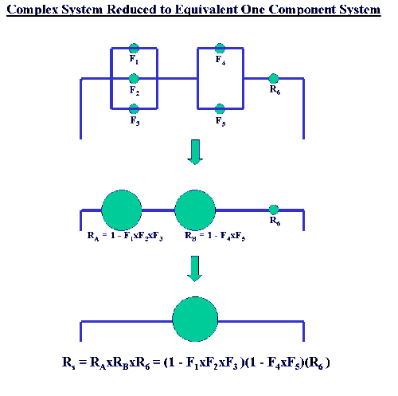

|
8.
Assessing Product Reliability
8.1. Introduction 8.1.8. How can you evaluate reliability from the "bottom-up" (component failure mode to system failure rate)?
|
|||
| Often the reliability of complex systems can be evaluated by successive applications of Series and/or Parallel model formulas |
Many complex systems can be diagrammed as combinations of Series components, Parallel components, R out of N components and Standby components. By using the formulas for these models, subsystems or sections of the original system can be replaced by an "equivalent" single component with a known CDF or Reliability function. Proceeding like this, it may be possible to eventually reduce the entire system to one component with a known CDF. Below is an example of a complex system composed of both components in parallel and components in series is reduced first to a series system and finally to a one-component system.  Note: The reduction methods described above will work for many, but not all, systems. Some systems with a complicated operational logic structure will need a more formal structural analysis methodology. This methodology deals with subjects such as event trees, Boolean representations, coherent structures, cut sets and decompositions, and is beyond the present scope of this Handbook. |
||